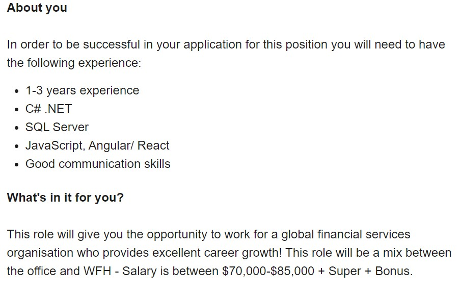
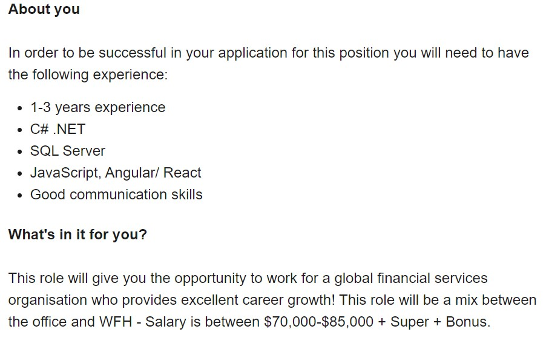

Hi everyone. My name's Josh. I just turned 29 and recently got married last year to my beautiful wife Monica in December. I was born is Australia and have lived here my whole life. I've only gone overseas twice which on both occasions were holiday trips to Japan with my older brother. My brother and I were drawn into places like Tokyo and Sapporo that gave us a completely different cultural experience from our own as well as taking in the breath-taking landscapes whilst exploring and skiing down their mountains. Along with skiing I also grew up competing in quite a few sports but most notably in swimming and dancing. Even now I continue to stay in shape and maintain social connections from these experiences along with building and creating new ones today.
I don’t know exactly when, but I always felt some unexplained intrigue towards IT for as long as I can remember. Whether it was through video games consoles when I was young or even general home appliances, I've been fascinated by what makes them operate and how they came to be.
I came here to study at RMIT to gain further knowledge and understanding about IT overall. I feel that this will allow me to attain the skills necessary in order to progress to a career one day that I truly feel proud and happy to be doing. As this is my first time studying since high school, I'm expecting to learn a lot of new things including study plans, orientating goals, developing techniques and skills when communicating and working in teams. I'm also anticipating that I'll learn a lot about myself as well with the expectation of an increased amount of time and dedication put into learning this course.
Below in the snapshot is a perfect example of what I'm aiming for in terms of finding a job like this after gaining more experience in IT, more specifically net/software developing.
 

 https://www.seek.com.au/job/51720585?type=promoted#searchRequestToken=613159e1-9fbe-4e91-9525-864d98420919
https://www.seek.com.au/job/51720585?type=promoted#searchRequestToken=613159e1-9fbe-4e91-9525-864d98420919
The company Charterhouse is looking for someone with at least 1 – 3 years of experience working in software development and prior knowledge of JavaScript, angular/ react, C# .net, SQL Server. They are also after a candidate with good communication skills.
Although I'm well versed in communication with previous customer service roles, I'm currently in the beginning stages of learning Java programming and have no experience nor knowledge in the other programs. I also haven't worked in other IT related jobs and have only started to learn about the IT industry. I've first starting out by learning the basic principles and fundamentals of IT by completing this course.
I'm eager to change the current lack of experience and have started to teach myself how to write code and program in my spare time through my own research and studies. I plan to put all my conscious efforts into learning as much as I can by completing my bachelor of IT. I want to eventually be able to specialize in writing and developing programs for myself and others. I aim to one day obtain a job such as this working as a net developer or software engineer.

To me the Myers Briggs Test, Honey and Mumford quiz and Big Five Personality Test results line up pretty accurately to what I thought my personality and learning style was. From my own view I do seem to socialize well with everyone and tend to get along with all people regardless of their different cultures, backgrounds and beliefs. Be it staying calm during conflict or negotiating through pans and ideas with others, I'm able to assess different social situations and act in a way that I feel is most effective that benefits everybody involved. I strive to help people, make them feel happy and at ease when their around me. The best way I learn is through practical experience. I need to be able to not only see but feel what I'm doing.
After viewing my results, I believe that it's highlighted my strengths and exposed my weaknesses for me to see, bringing critical attention to what can be improved and changed. This has given me the necessary blueprints to further enhance my capabilities and understanding of how I can become more efficient when working in a team.
When working in a team I do need to remember that due to my overly optimistic attitude there is a possibility that I will overwhelm, frustrate or simply annoy other people who are more grounded and less idealistic. I must be very mindful to not force my own perspective on people with how I believe something should be. At times I need to accept others faults as they accept mine and allow them to be as they are.
The project I'd like to carry out would be to create a mobile application that allows users to scan the paper receipt of any food or item from a store that they've purchased with the camera of their phone. The camera will then transmit a signal and make an electronic receipt for that specific item. The receipt is automatically saved in the application of the phone which can now be presented to the original shop where the item was bought to exchange or replace the item.
This idea came about from numerous occasions where I would be buying a certain item from a store to then later realise that the food was already unsealed or expired. I would also discover missing components from cheap furniture kits such as office desks and chairs only after arriving home later on. In other times and experiences these products simply would not work. The problem for me along with some of my friends and family that I discussed this with was that we would usually misplace or throw away the paper receipt for the item before realising that it needed to be returned.
The receipt scanner app will be able to read all visible paper receipts for items from certain stores. It will utilise a data gathering type software which can correlate the appropriate prices and details in line with the products for any given day and time that the product was purchased. It will record all details of the transaction including the description of the item and the price itself. This information will store and interconnect with data on the shop's own servers to provide accounts of the purchases being uploaded and recorded accurately. The camera on the user's phone only needs to be turned on and pointed at a close distance towards the paper receipt of the product in order to create the receipt to save that information on the app.
Even in the early stages of the app, it will be extremely user friendly and simplistic to use. With just a few touches and swipes on their screen, their phone can swiftly take the receipt details and almost instantly save them onto their app as an organised list of shopping transactions. These transactions will show the user the exact location and time where the item was bought as well as the payment transaction details itself. When returning the item, the shop staff can then scan the saved details from the app in the user's phone to recognise and locate that specific transaction so they can possibly exchange the item for something else or receive a replacement.
There will be continuous updates and improvements to the functionality of the app. Upon its release the app will eventually have newer versions that come out to further increase the smoothness in which it operates. There will also be new features added to the app including direct barcode scanning and additional venues and shops will be added to the app's capabilities.
To design and create this app I'll first need to use an actual development platform for making applications such as AppSheet. By using AppSheet's platform, I'll be able to use other databases from Google Drive or DropBox to put together the basic framework and functions of the app without the direct use of code. I will also need to find out how to add the scannable feature for images and barcodes into the app using the inventory feature on google sheets.
I'll need to be able to understand the principles and skills of app and software developing and then putting those into practice by creating the app with all of the listed functions and features. Writing up a specific spreadsheet would be a great way start to the project in terms of laying out the main ideas. I can then transfer that data into a development platform to begin building the app. I would also have to source out various contacts and people to propose my pitch of using the app along-side their business.
I understand that there are already different types of electronic receipts that can be sent to your email after providing your details for larger and more valuable items (cars, electronics, bank loans, bills etc) however I wanted to create a certain application that would prove useful in recording all of the more everyday items into a person's phone in a nice niche way where you can save a wealthy amount of time and convenience by not having to find the original receipt or chase up transaction histories with shopkeepers.